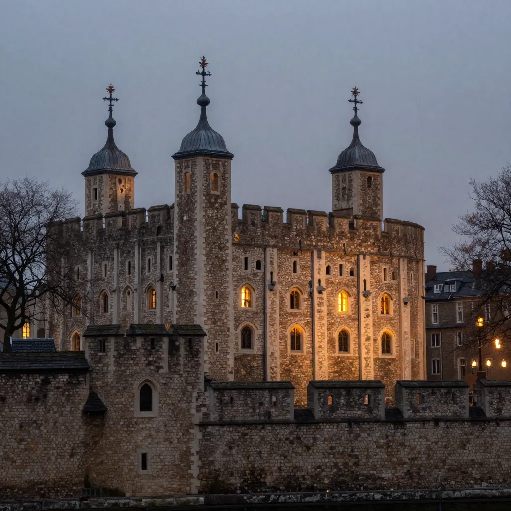

The Princes in the Tower: England's Most Enduring Royal Mystery

Two boys and a tower
It was the summer of 1483, in London. Two boys went into the Tower of London. One was twelve years old, and the other was only nine. They vanished from the best-guarded building in England.
The older boy was Edward V, the newly named king. His younger brother was Richard, Duke of York. They were the sons of King Edward IV and Elizabeth Woodville, and they were the rightful heirs to the English crown. Their uncle, Richard, Duke of Gloucester, had placed them in the Tower to get ready for Edward’s coronation, the crowning ceremony.
The coronation never happened. The boys were never seen in public again.
Their disappearance is one of the best-known unsolved mysteries in English history. For more than five hundred years, historians, novelists, playwrights, and amateur detectives have argued. Who killed the princes? Were they killed at all? Let us start where the trouble began.
A king dies too soon
On April 9, 1483, King Edward IV died suddenly at the age of forty, after twenty-two years on the throne. Nobody knows for sure why he died. Stroke and pneumonia are two guesses. His death caused an instant crisis.
His eldest son and heir, Edward V, was only twelve. He was old enough to be king in name, but far too young to rule. Edward IV had named his trusted brother, Richard, Duke of Gloucester, as Lord Protector. A Lord Protector is a man who runs the kingdom until the young king grows up.
The boy was at Ludlow Castle in the Welsh Marches, near the border of Wales. His mother’s brother, Anthony Woodville, Earl Rivers, was looking after him. Edward’s party set out for London for the coronation. Gloucester stopped them at Stony Stratford in Northamptonshire.
Gloucester acted quickly. He arrested Rivers and several of the young king’s closest friends. In this way, he took control of the king himself. He took the boy to London and placed him in the Tower. At first Edward was not a prisoner. He was the future king, getting ready for his crowning.
But the uncle’s plans soon became clear.
From king to “bastard”
On June 16, the king’s younger brother, Richard, Duke of York, was also brought to the Tower. The reason given was to keep his brother company.
Then a group of lords and commoners met. Parliament was not officially sitting. They said that Edward IV’s marriage to Elizabeth Woodville was not valid. The reason was that Edward had earlier promised to marry Eleanor Talbot. A bishop said that he knew of this promise. Parliament made it law in January 1484, and the law is called the Titulus Regius.
By this reading, both princes were illegitimate. That means they were not the lawful children of the king. They could not inherit the throne. The path was clear for Gloucester.
On June 26, 1483, he was proclaimed king. He accepted. He was crowned King Richard III on July 6, 1483. And the two boys? Here the written record begins to fail us.
The record that stops
An Italian friar named Dominic Mancini was in London that summer. He wrote that the boys were seen less and less in the Tower grounds. He also heard rumors that they were dead. He is the only writer of that time to tell the story. The Croyland Chronicle was written about three years later.
After that, there is silence. No writer of the time described the princes’ deaths. There is no confession and no witness. No body has been proved to be theirs. The princes were alive in the Tower in the summer of 1483. By autumn, nobody saw them again.
So historians must guess. Who had a reason to want the boys gone? The list of names is short, and each name comes with an argument.
Who is to blame?
Richard III is the usual suspect. He was their uncle. He had declared them illegitimate and taken their throne. While the princes lived, rebels could rally around them. He also ran the Tower and could reach the boys at any time. Many historians, from Tudor times to today, have thought Richard the most likely culprit.
Other suspects have been named. One is Henry Stafford, Duke of Buckingham. He was Richard’s cousin and an old ally. Later he turned against Richard and led a rebellion. He may have killed the princes on Richard’s secret orders, or on his own.
Another is Henry VII, also called Henry Tudor. He beat Richard III at the Battle of Bosworth in 1485 and started the Tudor dynasty. Some “Ricardian” historians, who defend Richard, think that he was the true culprit. But this idea needs the princes to have stayed alive in Richard’s care until 1485. Most historians find that unlikely.
The Richard III Society is a group that defends Richard. It says that he was the victim of Tudor propaganda. This was a campaign meant to make Henry VII’s seizure of the throne look right, by painting the last king as a monster. The Society points out that the worst stories came from Sir Thomas More’s history and Shakespeare’s play. Their writers lived decades after the events, and they had strong reasons to make the last Yorkist king look bad.
Some researchers even say that one or both princes may have lived. They point to later men who claimed to be the princes. One was Perkin Warbeck, who said he was Richard, Duke of York. In the 1490s, he led a serious rebellion against Henry VII.
Bones in a wooden box
In 1674, nearly two centuries later, workmen were pulling down a staircase in the Tower of London. They found a wooden box with the bones of two children. People thought they were the princes. King Charles II had the bones placed in Westminster Abbey. The Latin words on the grave say that they are the remains of Edward V and Richard, Duke of York.
In 1933, two men studied the bones. They were an archivist, Lawrence Tanner, and an anatomist, William Wright. An anatomist studies how bodies are built. A dentist, George Northcroft, also helped. They decided that the bones belonged to two children of about the right ages.
But the test used the limited methods of the 1930s. Many modern experts doubt the findings. Some bones were missing, and the men started by assuming that the bones were the princes. DNA, the code inside every living cell, has not been tested on these bones. The Abbey has not allowed it.
The bones may be the princes. They may be other children. Without DNA testing, nobody can be sure.
A king under a car park
Another royal grave was lost for a long time. On August 22, 1485, Richard III was killed at the Battle of Bosworth Field. He was the last English king to die in battle. His body was taken to Leicester and buried in the church of the Greyfriars monastery. In the 1530s, King Henry VIII closed the monasteries. Greyfriars was pulled down, and Richard’s grave was lost.
In August 2012, a team dug up a car park in central Leicester. The dig began with the writer Philippa Langley. The archaeologist Richard Buckley of the University of Leicester led the work. Old maps suggested that the Greyfriars church had stood there. They soon found a skeleton.
It had a curved spine, called scoliosis. It also showed about ten injuries, most of them to the skull. Radiocarbon dating and DNA tests showed that this was King Richard III. DNA matched two living relatives of his family. In March 2015, he was buried again, in Leicester Cathedral.
Philippa Langley then began the Missing Princes Project. It aimed to re-check the evidence using original records, not later Tudor stories. She argues that some records suggest Edward V may have lived beyond 1483. Some people praise her work for finding overlooked evidence. Critics say that she makes too much of small, broken pieces of evidence.
Two boys, still missing
Let us return to the two boys who walked into the Tower in 1483. This is the coldest of cold cases. If it was a crime at all, it happened over five hundred years ago. No forensic evidence survives. No witness was ever produced. No confession was ever written down.
Many historians think that the most likely answer is that Richard III ordered the deaths of his nephews. This would remove a threat to his throne. Fights over the throne were common in those years.
But “most likely” is not “certain.” We know that the boys went into the Tower and that nobody saw them again. We do not know what happened to them. Perhaps one day DNA tests on the bones in Westminster Abbey will be allowed. Perhaps new papers will be found. Until then, the two boys are still missing, and the question is still open.
References & Further Reading
📚 Recommended Reading: The Princes in the Tower by Alison Weir (on Amazon) — As an Amazon Associate, we earn from qualifying purchases.
Editorial note: Nobody knows for sure what happened to the two princes. Richard III is the most common suspect, but there is no proof, and the bones in Westminster Abbey have never had a DNA test. See our Editorial Policy.